In this Project, we created the foundation for shading and coloring objects in a lit scene through ray tracing. We first established the basic tools such as detecting intersection with primitives, mapping world points to pixel locations, and building a BVH datastructure that makes intersection detection more efficient. Then we implemented progressively more complex illumination schemes starting with direct (zero and single bounce) lighting and eventually incorporating indirect (atleast one bounce) illumination, which used the primitives previously established to determine the proper illumination for pixels representing different points in a scene. Finally, we added an algorithm to speedup the rendering process of these scenes by establishing a "sampled enough" heuristic through adaptive sampling
Part 1: Ray Generation and Scene Intersection:
Ray generation and primitve intersections
Ray generation and primitive intersection is the first step in the rendering pipeline. In order for a camera to be able to render an image of what a 3D scene looks like, it must determine what should be represented in each pixel of the image. To do so, a transfomration is first established between the camera's image (normalized image coordinates) and the camera's virtual sensor (world frame coordinates), a plane orthogonal to the camera's direction. Then, we create a ray in the the world frame, from the cameras location, to the point in the world frame which corresponds to the location of that pixel. This ray represents the "viewing direction" for the objects that should be seen in the pixel. This process is known as ray generation.
Once the appropriate ray has been generated, to properly determine what color or object should appear in the image at each image coordinate, just follow along the direction of the ray until it intersects an object primitive (triangle, sphere, etc) that is used to build objects in the scene. Once an intersection is detected, the color of the image coordinate, should be dependent on the illuminance of the object in reverse direction of the ray.
Triangle Intersection Algorithm
My triangle-ray intersection algorithm is primarily built off of the Moller Trumbore Algorithm. Using the Moller Trumbore Algorithm on the triangle-ray pair that we are finding an intersection for, we get the values t (time of intersection), b1, and b2 (two of the 3 barycentric coordinates for the triangle). We first inspect the t value to make sure that it is within the lifespan of the ray (between t_min and t_max), since rays are considered as finite segments of the entire ray. Then we check the barycentric coordinates b0 = 1-b1-b2, b1, and b2 returned by the Moller Trumbore Algorithm to make sure that they represent a point that is actually INSIDE the triangle, meaning that all barycentric coordinates are between 0 and 1. If both conditions are true, the intersection is within the lifespan of the ray and the intersection point is inside the triangle, then there is an intersection between the given ray and triangle.
Example images with normal shading for a few small .dae files
 CBEmpty.dae renderred with normal shading
CBEmpty.dae renderred with normal shading
|
 CBSpheres_lambertian.dae renderred with normal shading
CBSpheres_lambertian.dae renderred with normal shading
|
Part 2: Bounding Volume Hierarchy:
BVH Construction Algorithm
The Construction of a Bounding Volume Hierarchy is a recursive process, where the BVH itself is a tree structure of BVH Nodes. When given a list of primitives that we are trying to segment into separate bounding volumes, if the number of primitives in this list is small enough to be contained in a single leaf node, then allocate a leaf node and the process is finished. Otherwise, if the number of primitives is too large to be contained in a single leaf node, we need to divide the primitives in half and create a sub-BVH tree for each half. The way that the primitives are allocated into 2 groups is: determine which axis (x, y, z) has the widest range in which primitives exist, and find the midpoint of this range. All primitives whose centroid is on one side of this midpoint gets put into one group, and all primitives whose centroid is on the other side is put into the other group. If there arises a situation in which one of these 2 groups has no primitives, forcibly move one primitve from the other group into this group.
Example images with normal shading for a few large .dae files using BVH acceleration
 banana.dae renderred with normal shading
banana.dae renderred with normal shading
|
|
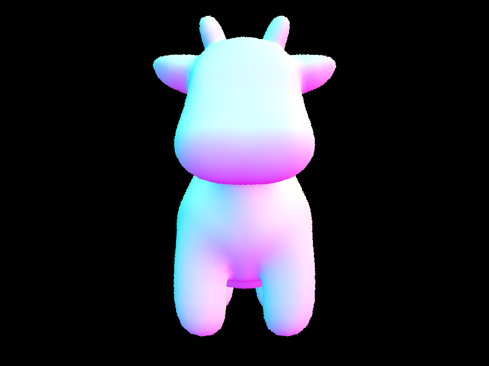
cow.dae renderred with normal shading
|
|
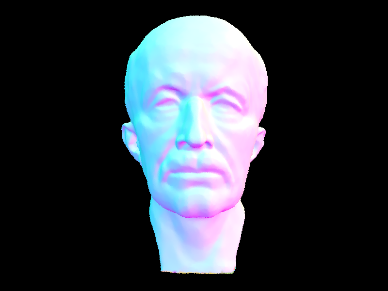
maxplanck.dae renderred with normal shading
|
|
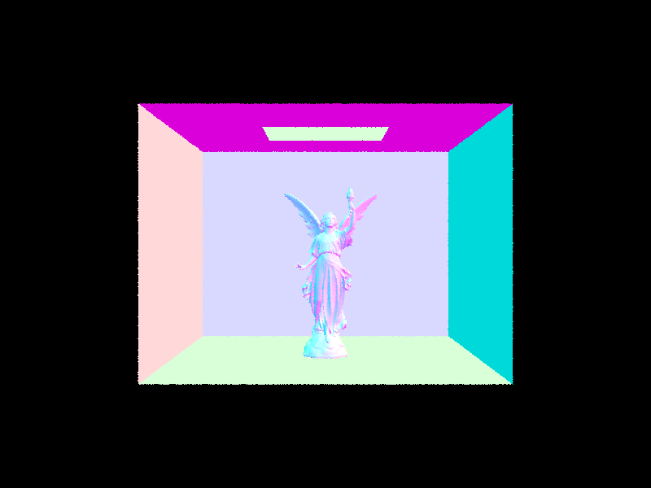
CBlucy.dae renderred with normal shading
|
Render Time Comparison on Complex Geometries With and Without BVH acceleration
Rendering time for complex geometries decreased SUBSTANTIALLY when BVH acceleration was used. This is because we no longer have to check for intersection between each ray and EVERY SINGLE primitive in the scene we are trying to render. For complex geometries like maxplanck.dae and CBlucy.dae, these contain over 50,000 and 130,000 primitives respectively. To do a linear search for intersection with each primitive for each ray would take incredibly long. When BVH acceleration is used, not only can we first check for possible intersection with a collection of primitives by using BBox-es that envelop multiple primitives, but due to the tree structure of the BVH, we can cut down the search space of our intersetion in half with every recursive call leading to significantly improved performance. These performance improvements can be seen in the render time comparisons of the following scenes with and without BVH acceleration. Notice that CBlucy.dae was not attempted without BVH acceleration because maxplanck already couldn't finish renderring within 2 minutes despite being able to finish in .06 seconds with BVH acceleration
|
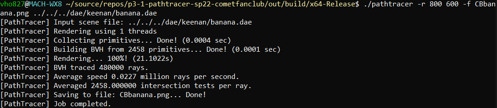
banana.dae renderred in 21 seconds with normal shading WITHOUT BVH acceleration
|
|
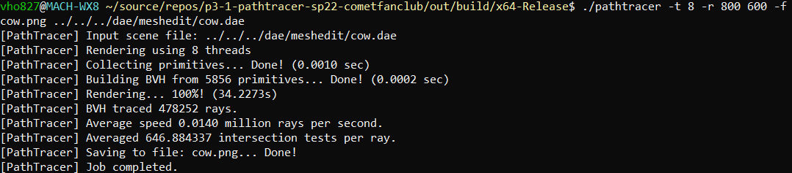
cow.dae renderred in 34 seconds with normal shading WITHOUT BVH acceleration
|
|
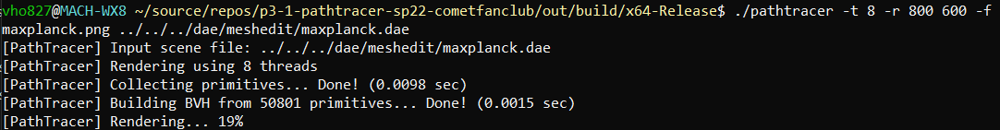
the progress made in 2 minutes to render maxplanck.dae with normal shading WITHOUT BVH acceleration
|
|
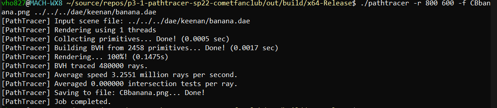
banana.dae renderred in 0.14 seconds with normal shading WITH BVH acceleration
|
|
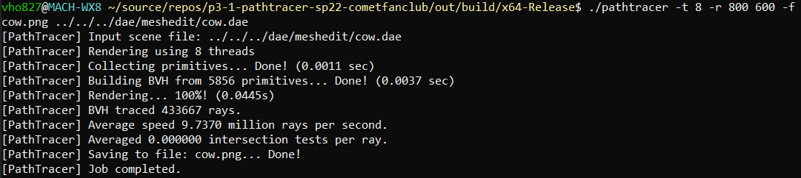
cow.dae renderred in 0.04 seconds with normal shading WITH BVH acceleration
|
 maxplanck.dae renderred in 0.06 seconds with normal shading WITH BVH acceleration
maxplanck.dae renderred in 0.06 seconds with normal shading WITH BVH acceleration
|
|
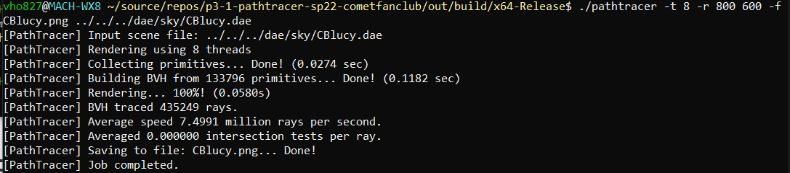
CBlucy.dae renderred in 0.05 seconds with normal shading WITH BVH acceleration
|
Describe what you did in Part 1. etc...
|
Results Caption: my bunny is the bounciest bunny
|
Here is an example of how to include a simple formula:
a^2 + b^2 = c^2
or, alternatively, you can include an SVG image of a LaTex formula.
This time it's your job to copy-paste in the rest of the sections :)
Part 5: Adaptive Sampling:
Adaptive Sampling Implementation
To implement adaptive sampling, we used the algorithm described in the spec. Instead of the previous implementation of a fixed n samples per pixel, we terminate sampling when a function of the variance of the samples, number of samples, and mean of the samples has been fulfilled. Once our samples have converged to the desired degree, we stop sampling.
We define two more variables, s1 and s2, to help us check after each sample if we have converged enough to stop sampling. We store in s1 a running sum of all of the illuminance values of the samples, and we store in s2 a running sum of the square of the illuminance values of the samples.
From these two values, we can calculate our mean and variance of our samples so far: the mean is defined as s1 divided by the number of samples, and the variance is defined as sqrt((1/(n-1)) * (s2 - s1**2/n)), where n is our number of samples. From these statistics, we can calculate our heuristic value I, which is defined as 1.96 * variance / sqrt(numsamples).
We want to terminate sampling when I <= maxtolerance * mean, where maxtolerance is a hyperparamter (0.05 by default.) For efficiency, we only calculate the heuristic once every numsamplesperbatch samples, where numsamplesberpatch is a hyperparameter (default 32), and terminate sampling once this check passes or we reach the maximum allowed number of samples.
Example images showing the image rendered using adaptive sampling as well as the sample rate image, where red signifies the highest sampling rate and blue signifies the lowest sampling rate.
|
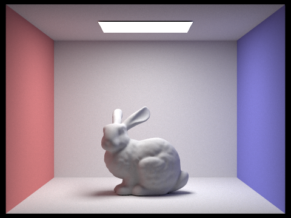
bunny rendered with adaptive sampling
|
|
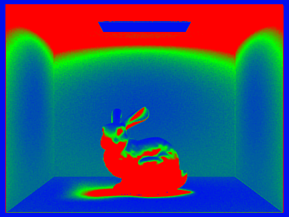
sampling rates of bunny sampled with adaptive sampling
|
|
dragon rendered with adaptive sampling<
|
|
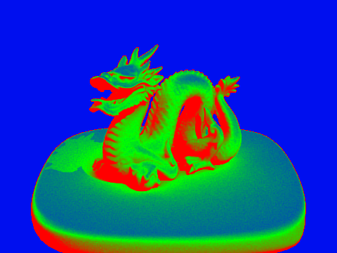
sampling rates of dragon sampled with adaptive sampling<
|
We see here that the shadows and darker areas have significantly higher sampling rates than those in direct light. This is because for these areas, the variance in the samples was much higher. This is also why these areas were much noisier without adaptive sampling. Thus, using this heuristic, we naturally sample noisier areas more
A Few Notes On Webpages
Here are a few problems students have encountered in the past. You will probably encounter these problems at some point, so don't wait until right before the deadline to check that everything is working. Test your website on the instructional machines early!